How to prepare and conduct the Watchtower Study on time
Version 4.0 · November 2026
⚠ Two important warnings
Always conduct from the original publication. The app shows the paragraphs and questions only to calculate the times. The conductor must never rely on the content shown in the timer: to present the material to the audience, always use the JW Library app or the printed Watchtower magazine.
During the study, use presentation mode. It is the recommended way to use the timer while conducting, because it avoids distractions: it shows only what you need, with green, yellow and red so you can see at a glance how you are doing for time, and large, easy-to-press buttons to move to the next paragraph and to mark comments (section 9).
Study Timer helps the brother who conducts the Watchtower Study to divide the time well and finish on time.
You load this week’s article as a PDF and the app:
Reads the article and finds the paragraphs, questions, scriptures to be read, pictures, notes and review questions.
Calculates how much time to give each part: the introduction, each paragraph, the review and the conclusion.
Guides you during the study with a timer for each paragraph and colours that show whether you are on time, in grace time or over time.
Readjusts itself: if a paragraph runs long, it shares the remaining time among the following ones so that you finish on time.
Unofficial app. It is a free, independent project. It is not an official publication and has no connection with jw.org or with the organization of Jehovah’s Witnesses. The article is analysed on your own device: it is not sent to or stored on any server.
The pictures in this guide use an invented sample article, not a real Watchtower article.
2Install the app
The app icon is an orange book with a colored gauge (green, yellow and red) on a black background.
If you already use the app in the browser on an Android device, the home screen shows the green card “Using Android?” with the button “Open in Google Play”.
iPhone and iPad
It is not in the App Store yet, but it works just as well from the web:
Tap the Share button (the square with an arrow pointing up).
Choose “Add to Home Screen” and tap Add. The icon will appear on your screen.
Computer
Open temporizador-estudio.vercel.app in Chrome or Edge. If you like, install it as a program with the install icon in the address bar.
Updates: when there is a new version, the message “A new version of the app is available” appears. Tap Update. The app never updates by itself in the middle of a study.
3The home screen
This is the first thing you see when you open the app. The red numbers in the picture show where each thing is.
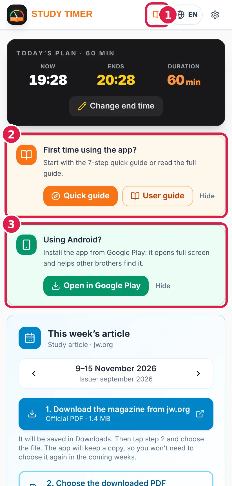
Home screen.
Book button: opens this guide at any time.
“First time using the app?”: opens the quick guide or this guide. Once you know the app, tap Hide.
“Using Android?” (only on Android phones using the browser): install the app from Google Play. It can also be hidden.
Further down you will find:
Today’s plan: the current time, the time the study ends and its duration.
This week’s article: to download the magazine and open it (section 4).
Circuit overseer’s visit: the switch for the 30-minute study (section 13).
Study settings: a summary of your settings, with the Change link.
At the bottom, links to privacy, the guide, Google Play and the study history.
At the top are also the language (EN) and the settings⚙.
4Loading this week’s article
The “This week’s article” card shows the current week (for example, November 9-15, 2026) and the issue of The Watchtower that contains it. With the arrows ‹› you can choose another week.
“1. Download the magazine from jw.org” opens the official PDF of the matching issue. On Android it is saved in Downloads; on iPhone, tap Share → “Save to Files”.
“2. Choose the downloaded PDF”: select that file. The app looks inside the magazine for the article of the chosen week and analyses it. After you tap step 1, when you come back to the app this button turns green (“Downloaded? Tap here to open it”): one tap is enough.
The Watchtower is downloaded in the language of the app. If the app is in English, the English edition is downloaded; if it is in Spanish, the Spanish edition, and so on for every language. To download another language, first change the language of the app (section 14). In Portuguese, the Portugal or Brazil edition is downloaded, depending on what you chose.
The app keeps a copy of the magazine. The following weeks of the same issue open directly with “Open this week’s article”, without downloading anything again. Saved magazines are deleted automatically 3 months after their last week.
On a computer you can also drag the PDF anywhere onto the home screen (the message “Drop The Watchtower PDF here” appears) or choose the folder where you keep the magazines, and the app will find them by itself.
Does it say the magazine has not been published yet? jw.org publishes each issue a few weeks in advance. If you choose a week far in the future, it may not be available yet.
5The summary and the study plan
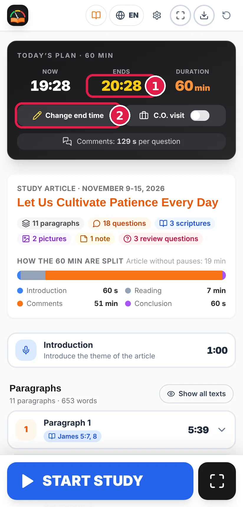
Today’s plan.
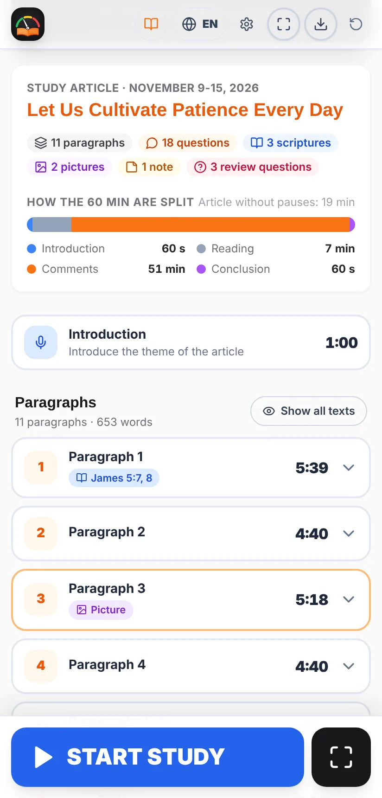
The article summary.
End time: the time the study ends.
“Change end time”: use it when the public talk runs late (see the box below).
When should I change the end time? The meeting lasts 1 hour and 45 minutes: song and prayer (5 min), public talk (30 min), song (5 min), Watchtower Study (60 min) and closing song and prayer (5 min).
If the talk runs late, those minutes are taken from the Watchtower Study. Before starting the study, tap “Change end time” and enter the time the study must end so that the meeting finishes on time (5 minutes before the end, for the song and prayer). Everything is recalculated to finish at that time.
If the talk ends on time or early, change nothing: the study lasts its 60 minutes and the meeting may end a little early, but never late. That is why the app never makes the study longer than set.
Below, the article summary shows:
The title and the week.
How many paragraphs, questions, scriptures, pictures and footnotes it has.
A colored bar showing how the time is divided: IntroductionReadingCommentsConclusion.
The plan also shows “Comments: X s per question”: the average time to answer each question.
If the article does not fit in the chosen time, you will see a warning. You can make the study longer or choose a faster reading speed in Settings.
6The list of paragraphs
Each paragraph is shown on one line with its number and its planned time. Tap a paragraph to open it.
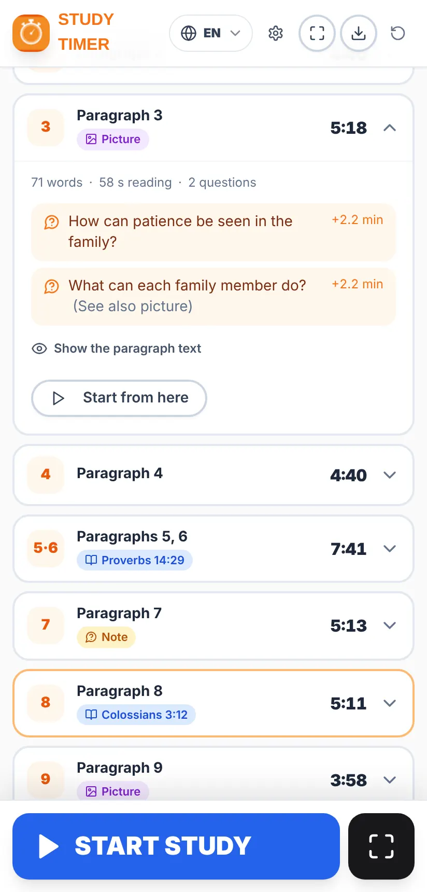
An open paragraph.
Paragraph details, each in its own color: words (gray), reading time (blue) and questions (orange). During the study, the planned time of day also appears (purple).
Planned time for the paragraph: the total and how it is divided. The bar shows the reading of the paragraph (blue), the comments (orange) and, for long paragraphs, an extra for more comments (green). If there is a scripture to read, a picture or a note, the audience comments on it: it appears within the comments, under the questions (for example “Scripture to read: 35 s”). The parts add up to the total.
“Start from here”: if the study has already started (for example, you arrive late), jump to this paragraph.
The colored labels tell you what to keep in mind:
Label
What it means
James 5:7, 8
There is a scripture to read.
Picture
The question refers to a picture in the article.
Note
There is a note (footnote) to comment on.
★ Key point
The question mentions a box or an idea in quotation marks.
With “Show the paragraph text” you can read the text to prepare the timing. To conduct, always use the original publication.
Paragraphs that share a question (for example, “5, 6”) go together, and the Next button skips the whole group.
7Conducting the study step by step
Recommended: during the study, use presentation mode (section 9). Here you can see how it works; it is the same in both views.
On the phone, the main buttons are always at the bottom:
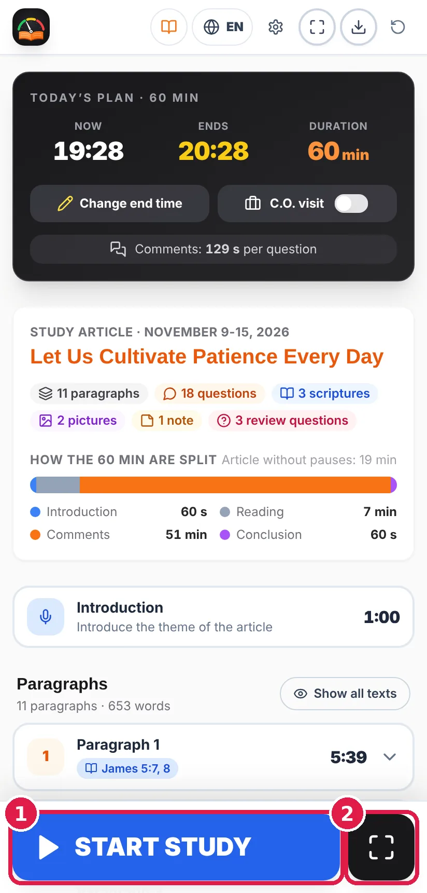
Before starting.
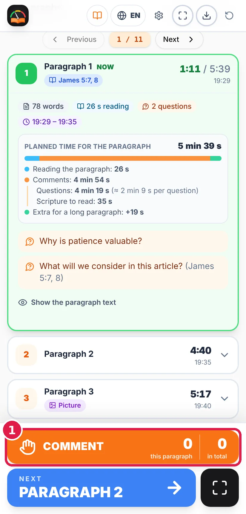
During a paragraph.
Big blue button: it tells you what comes next. Tap it each time you move to another part: Start study → Paragraph 1 → Paragraph 2 → … → Review → Conclusion → Finish study.
Black button⛶: opens presentation mode.
During the paragraphs, the orange ✋ COMMENT button also appears: tap it each time someone comments. At the end you will see how many comments there were.
Introduction. Tap “Start study”. The main stopwatch and the introduction stopwatch start.
Paragraphs. Tap Next as each paragraph begins. You will see the time used over the planned time (for example, 1:11 / 5:43) and the color (section 8).
Review questions. After the last paragraph come the questions in the final box.
Conclusion. It lasts exactly the time left until the end time: if there is time to spare, it uses all of it, even if that is more than the minute in Settings, and if there is less, it gets shorter. If the end time passes, it turns red.
Finish study. The stopwatch stops and the study report is saved (section 15).
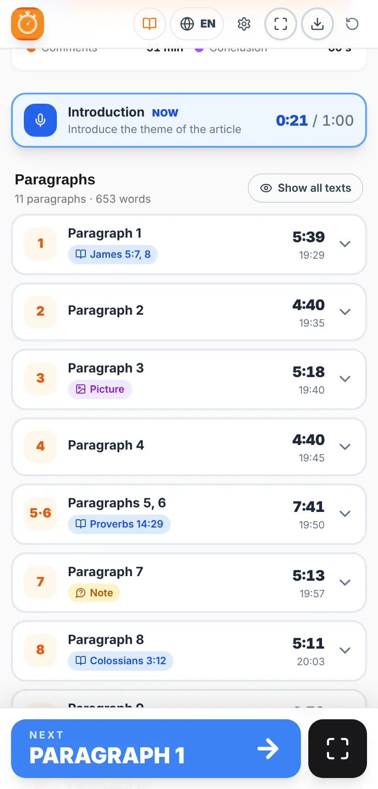
Introduction in progress.
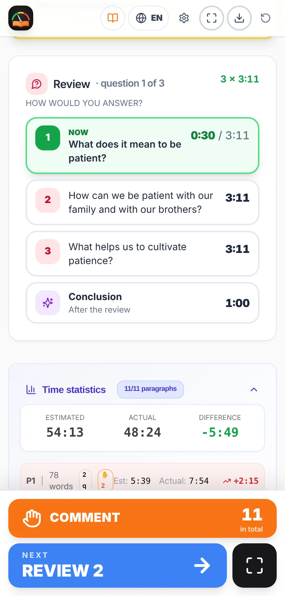
Review questions.
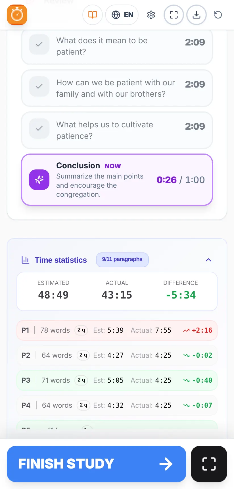
Conclusion.
With the ⏸ button in the plan you can pause the stopwatch if there is an interruption. While paused, the clock for the current part stops, but the end time does not move: the remaining time keeps going down, because the meeting ends on time.
8The colours: green, yellow and red
The card of what is in progress (paragraph, introduction, review question or conclusion) changes colour according to the time taken:
Colour
When
What to do
ON TIME
Up to the planned time.
All good: keep going.
GRACE TIME
It has gone over its time, but by no more than 30%.
Start wrapping up the comments.
OVER
More than 30% over the planned time.
Move on to the next paragraph.
On time.
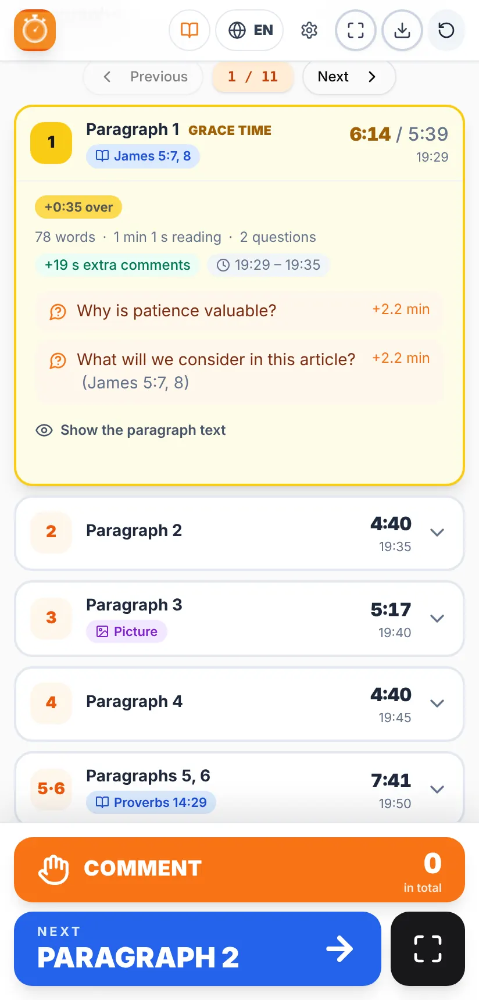
Grace time, showing how much it has gone over.
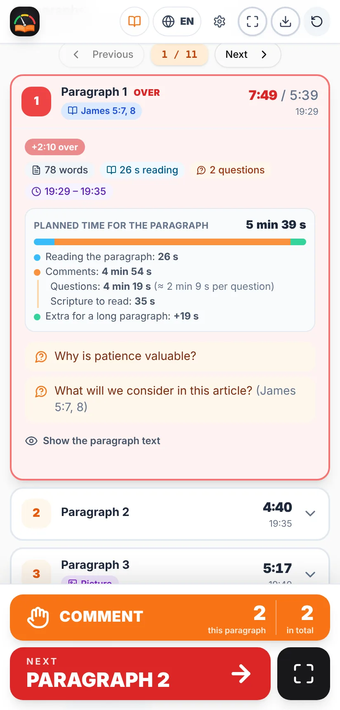
Over time.
In the last 5 minutes of the study, paragraphs and review questions have no grace time: they go straight from green to red, so as not to eat into the time at the end. The conclusion always keeps its grace time.
If a part runs long, don’t worry: when you tap Next, the app shares the remaining time among what is left, so that you finish on time.
The “Next” button warns you too
When the current part turns red, the big button to move on changes too, so you notice it without looking for it:
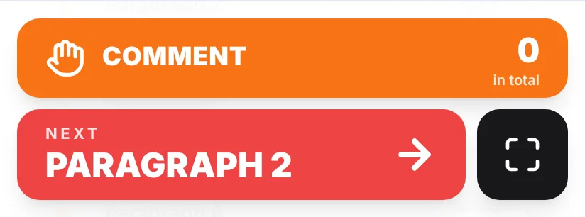
Red: time can still be made up.
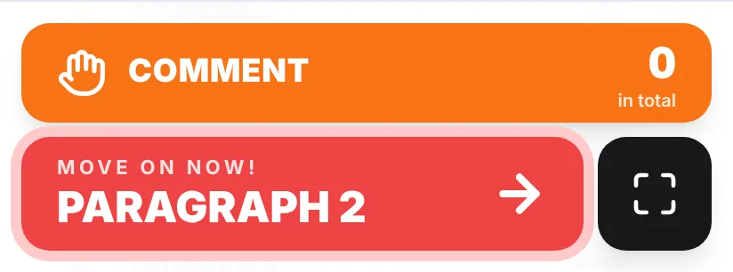
Pulsing: move on now.
Red button: the part has run over, but the time can still be made up in what is left. Start wrapping up the comments.
Red pulsing button with “Move on now!”: there is no time left to make up (there would be less than 30 seconds for each remaining question, or you are in the last 5 minutes). Move on as soon as you can.
In presentation mode the button turns white with red letters, so it stands out on any background colour.
If you do not want it, turn it off in Settings → Alerts → “Red ‘Next’ button”.
9Presentation mode
This is the recommended way to conduct the study. It shows only what you need, with large text and buttons, and the color tells you at a glance how you are doing on time.
Open it with the ⛶ button at the bottom and close it with the ✕ at the top (or with the phone’s “back” button, without leaving the app).
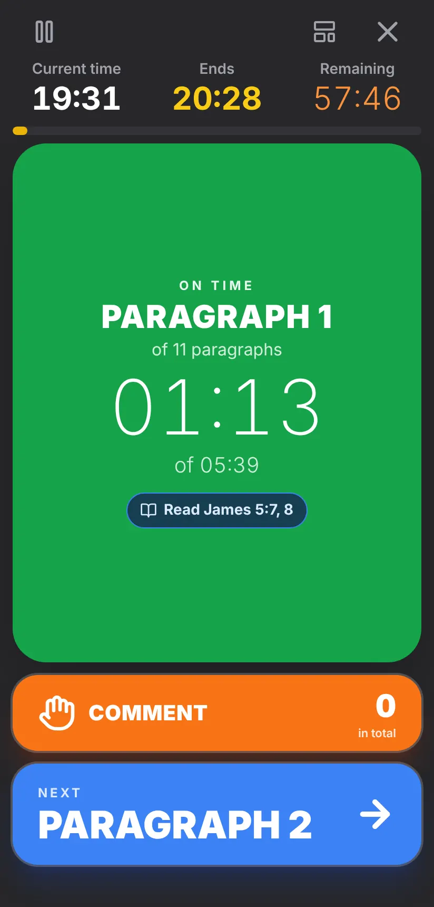
Presentation mode during a paragraph.
Colored box: where you are (for example, Paragraph 1), the stopwatch for that part and its planned time. Green, yellow or red depending on how you are doing.
Comment: tap it each time someone comments. On the left you see the comments for this paragraph (or this question) and on the right the total.
Next: moves on to the next part. The button tells you what comes next.
At the top you see what time the study started, the current time, the time it ends and the time remaining.
There are three layouts. Change them with the ▦ button at the top or in Settings → Display:
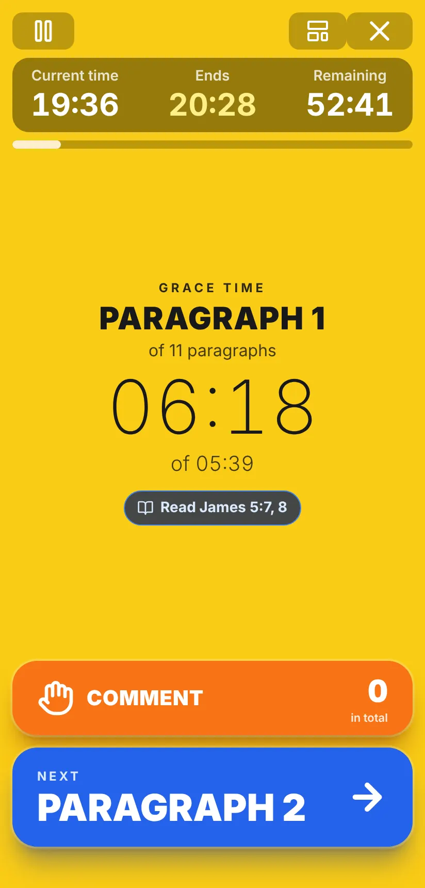
Traffic light: the whole screen changes color.
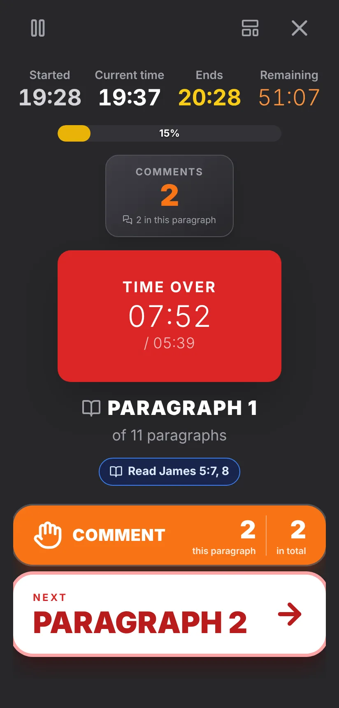
Classic: with the comment counter.
At the end, the big button says “Finish study” and then “View report”.
10How the times are calculated
Reading of each paragraph = its words ÷ the reading speed (150, 180 or 210 words per minute). Each scripture, picture, note or key point also adds the time per answer (at least 30 seconds; 35 by default) as a comment, because the audience reads it or comments on it.
Introduction and conclusion have the time set in Settings (1 minute each by default). The conclusion adjusts to the end time: if there is time left after the review, it takes all of it; if there is less, it gets shorter.
Comments: the rest of the time is shared among all the questions. Long or grouped paragraphs get a little more (the green “extra” in section 6).
During the study: each time you tap Next, what is left is recalculated so that you finish on time.
Example: in a 60-minute study with 11 paragraphs and 21 questions, about 7 minutes are reading, 2 are introduction and conclusion, and about 51 are comments: a little over 2 minutes per question.
11Settings
Tap ⚙ at the top right. Settings are saved on your device and are organised in four tabs:
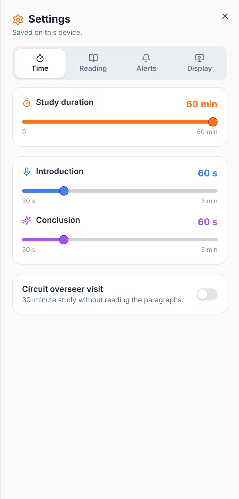
Time
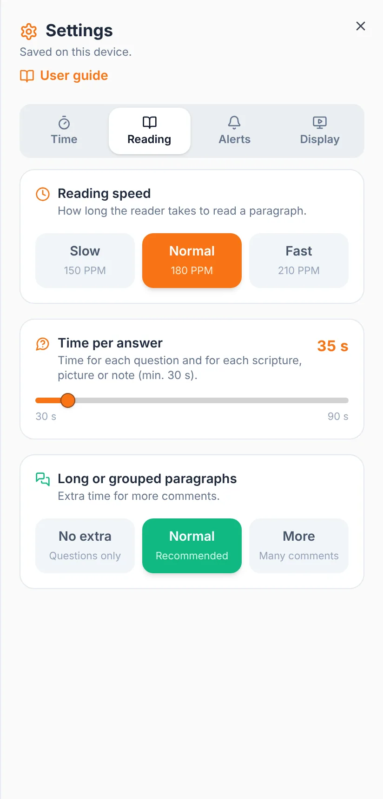
Reading
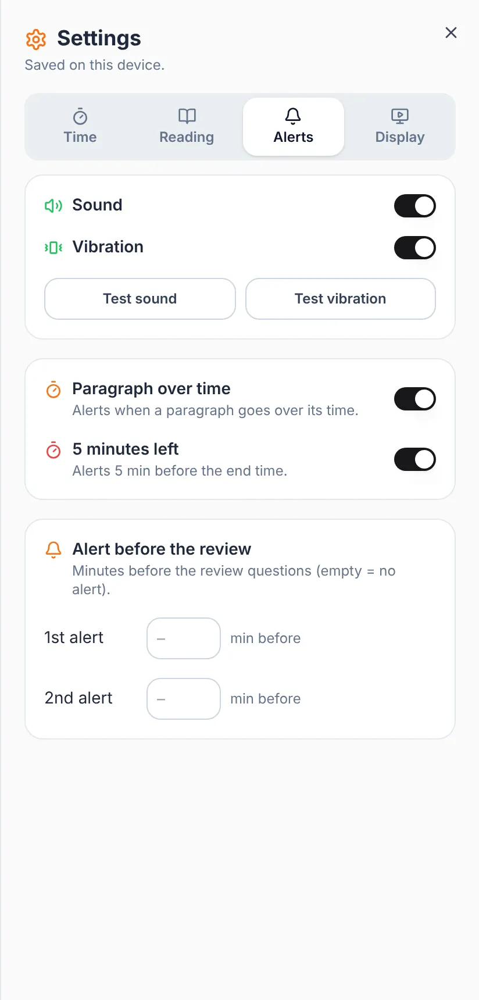
Alerts
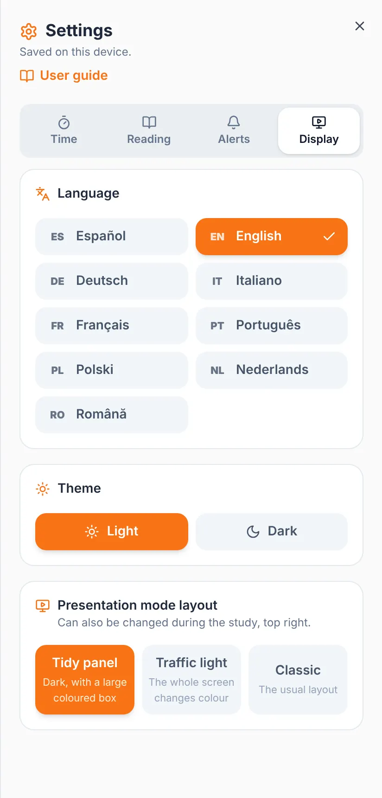
Display
Tab
What you can change
Time
Study duration (up to 60 min). Duration of the introduction and the conclusion (30 s to 3 min). Circuit overseer visit.
Reading
The reader’s reading speed: Slow (150), Normal (180) or Fast (210 words/min). Time per answer (30 to 90 s; also used for each scripture, picture, note or key point). Long or grouped paragraphs: No extra, Normal or More comments.
Alerts
Sound and vibration (with buttons to test them). Paragraph over time alert, “5 minutes left” alert and up to two alerts before the review.
Display
Language, light or dark theme (with four dark variants) and the presentation mode layout.
If you change the reading speed or the time per answer while the study is running, it will apply to the next study.
12Sound and vibration alerts
Paragraph over time: sounds when the current paragraph goes over its time.
5 minutes left: 5 minutes before the end time, with sound, vibration and an on-screen message.
Before the review: enter how many minutes before the review questions you want an alert (for example, 10 and 5). Leave it empty if you don’t want one.
Little time for the review: if less than 20 seconds per review question are left, the app warns you.
Red “Next” button: the button to move on turns red when a part runs over and pulses when there is no time left to make up (section 8).
Make sure the phone is not on silent if you want to hear the alerts. Vibration works on Android; on iPhone it depends on the browser.
13Circuit overseer visit
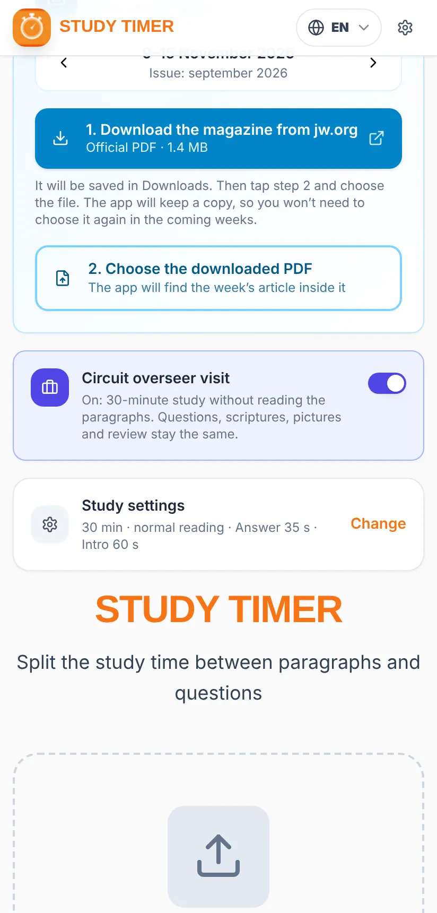
Switch on: 30-minute study.
In the week of the visit, turn on the “Circuit overseer visit” switch on the home screen (or in Settings → Time). The study then lasts 30 minutes and the paragraphs are not read: the questions, scriptures, pictures and review remain. Remember to turn it off after the visit.
That week the paragraphs are not read. In the planned time for each paragraph, scriptures to read, pictures and notes appear within the comments, for example “Scripture to read” or “Picture to comment on” (in the plural if there is more than one).
14Languages
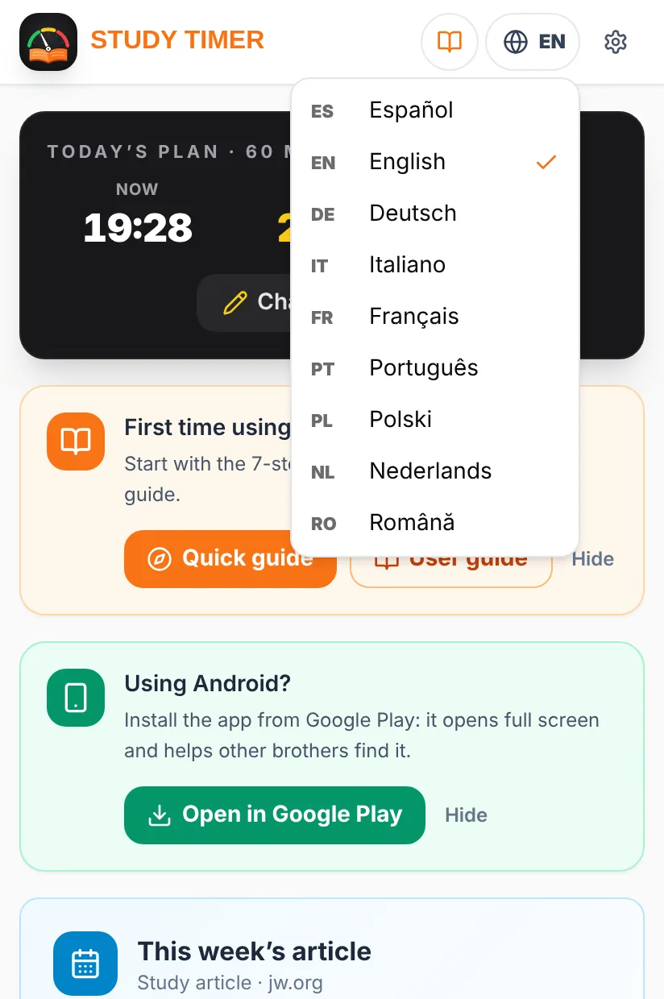
Language menu.
The app works in Spanish, Catalan, Basque, Galician, English, German, Italian, French, Portuguese, Polish, Dutch and Romanian. Change the language with the globe button at the top or in Settings → Display. When you change the language:
The whole app appears in that language, with its dates and times.
The jw.org button downloads The Watchtower in that same language. The language of the app decides the language of the magazine.
In Portuguese, the app asks once whether you prefer the Portugal or the Brazil edition. You can change it later in Settings → Display.
This guide is also available in all these languages: use the language buttons at the top.
15When you finish: the report and the history
When you tap “Finish study”, the app saves a report with the times of each part. It helps you see what ran long and do better next time.
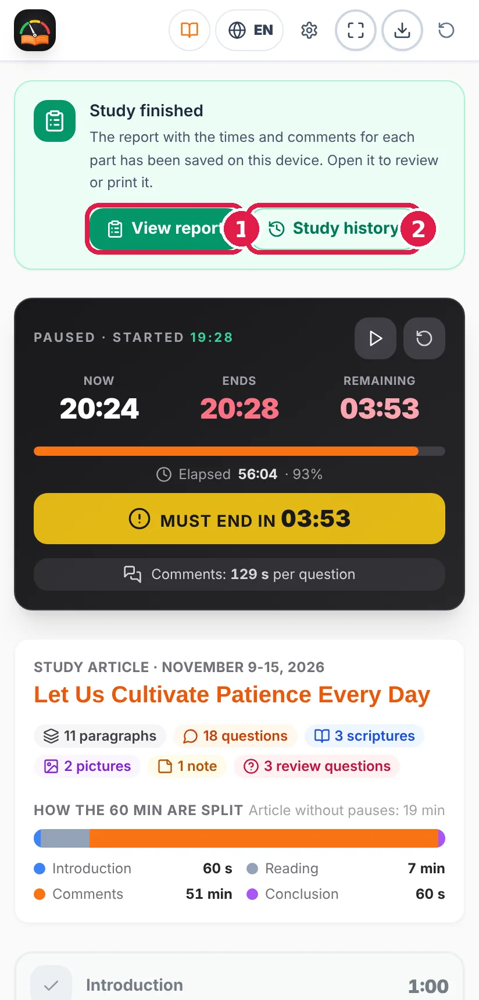
The “Study finished” card appears at the top.
View report: opens the report of this study in a separate tab.
Study history: opens the list of all saved studies.
The report
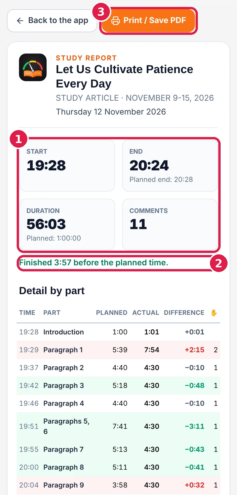
Top of the report.
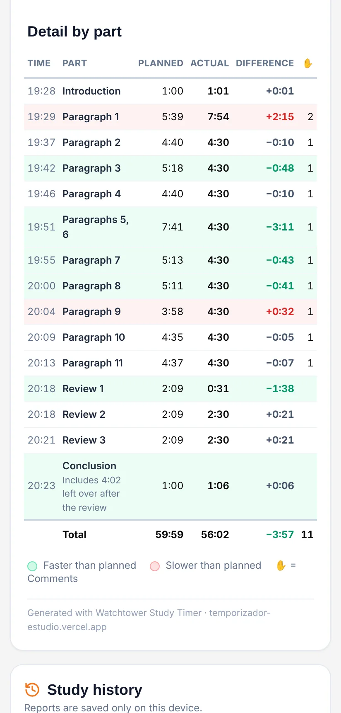
The table with each part.
Start, end and duration of the study, with the planned end time and the total number of comments.
One-sentence summary, for example “Finished 3:57 before the planned time” (in green) or “after” (in red).
Print / Save PDF: to print it on paper or save it as a file.
The table has one row for each part: introduction, each paragraph, each review question and conclusion. In each row you will see:
The time that part started.
Planned and Actual: the planned time and the time really used.
Difference: in green if it was faster and in red if it ran long.
✋: the comments you marked.
On a computer and when printed, the words and questions of each paragraph also appear. The printed report fits on one page.
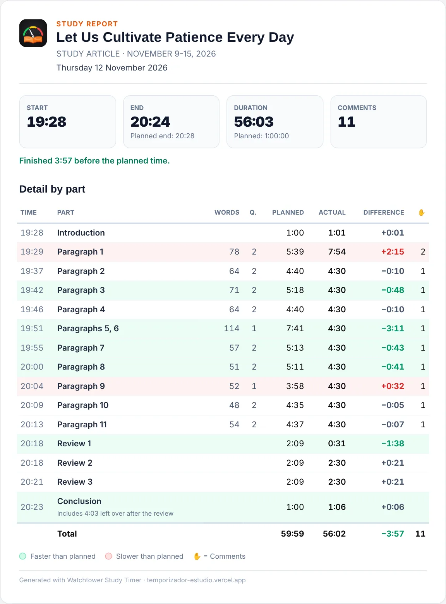
The full report, as seen on a computer or printed.
The study history
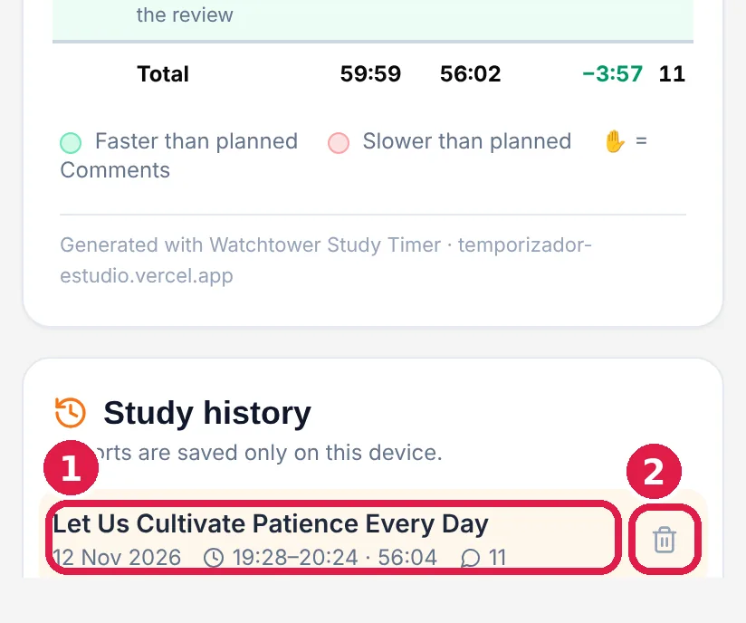
List of saved studies, below the report.
Tap a study to see its report. It shows the date, the times, the duration and the comments.
Trash can: to delete a report. Tap it once and then confirm with “Delete?”.
Reports are saved only on this device, never on the internet. Up to 100 studies are kept. If you clear the browser or app data, the history is lost.
You can also open the history from the “Study history” link at the bottom of the home screen.
Other options
Below the plan you will also find the time statistics for each paragraph.
With the export button ⬇ at the top you can save the study plan as a picture or PDF.
To prepare another study, tap start over↻.
16Frequently asked questions
Can I conduct by reading the paragraphs and questions in the app?
No. The app shows them only to calculate the times. To conduct, always use JW Library or the printed Watchtower magazine.
Why was The Watchtower downloaded in another language?
The magazine is downloaded in the language of the app. Change the language with the globe button and tap “Download the magazine from jw.org” again.
It says it doesn’t recognise the article format.
Use the official PDF of The Watchtower, study edition, downloaded from jw.org (the “Download the magazine from jw.org” button does it for you). Scanned PDFs or PDFs made from screenshots cannot be read.
It can’t find this week’s article in the magazine.
Check that the chosen week belongs to that issue of the magazine. If not, the app shows the closest article and lets you choose another week.
Do I need the internet during the study?
Only to download the magazine. Once the article is loaded, the timer works offline.
I arrived late or started late. What do I do?
Open the paragraph you are on and tap “Start from here”. The app will share out the remaining time.
The public talk ran late.
Before starting, tap “Change end time” and enter the time the study must end so that the meeting finishes on time. The app shortens everything to finish at that time. This option only shortens the study: it never makes it longer.
The alerts don’t sound.
Check in Settings → Alerts that they are turned on, tap “Test sound” and make sure the phone is not on silent.
What data does the app store?
Only your settings and the magazines you choose to keep, and always on your device. There are no accounts and no data is sent to any server. More information in the privacy policy.
Where can I see the studies of other weeks?
In the study history: tap “Study history” when you finish a study, or use the link at the bottom of the home screen.
Can I delete a report?
Yes. In the history, tap the trash can next to the study and then confirm with “Delete?”.
Why did the conclusion last longer than planned?
If there is time left after the review, the conclusion gets that time so that you finish on time. The report shows it under “Conclusion”.